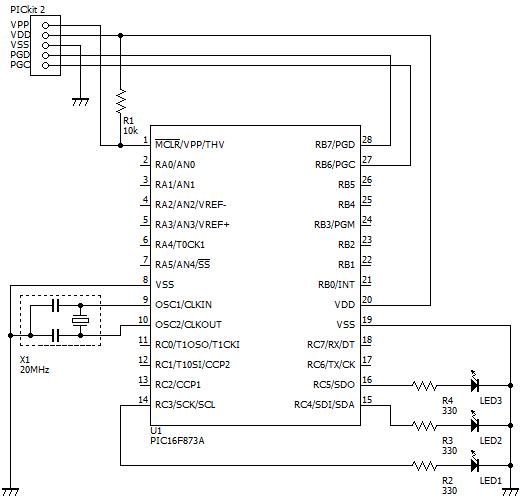
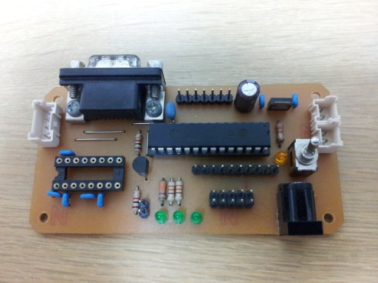

16F873A XC8開発例 - LED点滅回路（タイマ0割込みと__delay_ms関数）
はじめに
本ページでは，PIC16F873AとMPLAB XC8 C Compilerを使用した開発例として，LED点滅回路を紹介します． 点滅周期の制御方法として，タイマ0割込み（TMR0割込み）を使用する方法と__delay_ms関数を使用する方法を併せて解説します． 今回はPIC16F873Aを使用していますが，一部を変更することで，PIC16F84AやPIC16F877Aなどでも下記のプログラムを使用できると思います．
下記の環境で動作を確認しておりますが，動作を保証するものではありません． 掲載情報は自己責任の上でご利用ください．
| PIC | 16F873A-I/SP |
|---|---|
| MPLAB X IDE | MPLAB X IDE v1.85 for Mac |
| MPLAB XC8 | MPLAB XC8 C Compiler v1.20 for Mac |
| PICkit 2 | MPLAB X IDEを使用して書込み |
回路
回路図
今回は，自作にした汎用PICマイコンボードを使用しました． 下記のプログラムの動作に必要な部分を抜粋した回路は，下図の通りです． 下図の回路では，PICkit 2によるICSP (In Circuit Serial Programming)と電源供給を行うことし，回路部品数を必要最低限に抑えています．
{kind=link}
回路部品
上記の回路図中で使用している回路部品のリストです． 参考単価は，特に記載がない限り，秋月電子通商で購入した場合のものです．
| 番号 | 部品名 | 型番 | 数量 | 参考単価 |
|---|---|---|---|---|
| U1 | PICマイコン | Microchip 16F873A-I/SP | 1 | 350円 |
| X1 | セラロック | 村田製作所 20MHz | 1 | 30円 |
| LED1 - 3 | LED | 各社 φ3 緑色 | 3 | 10円 |
| R1 | 炭素皮膜抵抗 | 各社 1/4W 10kΩ | 1 | 1円 |
| R2 - 4 | 炭素皮膜抵抗 | 各社 1/4W 330Ω | 3 | 1円 |
| その他 | リード線など | 適量 |
プログラム
下記のプログラムはMPLAB XC8 C Compiler向けです．Cコンパイラの種類にご注意ください．
PICマイコンで待ち時間を生成する方法は，大きく分けて，TMR0割込みなどのタイマ機能を使用する方法と，命令実行サイクル（命令実行に要する時間）を使用する方法があります． 下記のプログラムでは，LED2 (RC4)およびLED3 (RC5)の点滅にTMR0割込みを，LED1 (RC3)の点滅に命令実行サイクルを利用しています． MPLAB XC8 C Compilerの場合，__delay_ms関数を使用することで，引数で指定した時間分（ミリ秒）の待ち時間を命令実行サイクルを使用して生成することができます． 待ち時間をマイクロ秒単位で生成したい場合は，__delay_us関数を使用します．
#include <xc.h>
#define _XTAL_FREQ 20000000 // 20MHz
#define RTCC_INTERNAL 0x00 // 内部クロック
#define RTCC_DIV_256 0x07 // プリスケーラの設定値: 256
#define TMR0_DATA 0x00 // TMR0の初期値
#define CNT_DATA 76 // 1秒カウンタ用変数の初期値（計算式は下記）
// 1sec / (1 / _XTAL_FREQ * 4 * OPTION_REG_DATA[2:0] * (255 - (TMR0_DATA - 1))
#pragma config BOREN = ON, CPD = OFF, DEBUG = OFF, WRT = OFF, FOSC = HS, WDTE = OFF, CP = OFF, LVP = OFF, PWRTE = ON
unsigned char cnt;
// プロトタイプ宣言
void initTMR0(unsigned char mode);
void setTMR0(unsigned char tmr0);
void interrupt isrTMR0();
void main()
{
PORTA = 0x00; // PORTAを初期化
PORTB = 0x00; // PORTBを初期化
PORTC = 0x00; // PORTCを初期化
TRISA = 0x00; // PORTAの入出力設定
TRISB = 0x00; // PORTBの入出力設定
TRISC = 0x00; // PORTCの入出力設定
cnt = CNT_DATA; // TMR0割込みを利用する1秒カウンタ用変数を初期化
initTMR0(RTCC_INTERNAL | RTCC_DIV_256);
setTMR0(TMR0_DATA); // TMR0の設定
T0IE = 1; // TMR0割込みを許可
GIE = 1; // グローバル割込みを許可
PORTC = 0b00001000; // LEDの点灯状態を初期化
while (1) { // 無限ループ
PORTC ^= 0b00001000; // RC3をビット反転
__delay_ms(500); // 500ミリ秒の待ち時間
}
}
void initTMR0(unsigned char mode)
{
OPTION_REG &= 0b11000000;
OPTION_REG |= mode;
TMR0 = 0x00;
}
void setTMR0(unsigned char tmr0)
{
TMR0 = tmr0;
}
void interrupt isrTMR0()
{
T0IF = 0; // TMR0割込みをクリア
cnt--;
if (cnt == 0) {
cnt = CNT_DATA; // 1秒カウンタ用変数を初期化
PORTC ^= 0b00110000; // RC4とRC5をビット反転
}
}
実装
回路構成例
今回は，自作にした汎用PICマイコンボードを使用しました． LEDは左側からLED1 (RC3)，LED2 (RC4)およびLED3 (RC5)です．
{kind=link}
動作例
上記のプログラムを実際に動作させたときの映像です．
__delay_ms関数にエラーマークが表示されるときは
文法や関数の利用方法に問題がなくコンパイルが成功するにも関わらず， __delay_ms関数や__delay_us関数にエラー（警告）マークが表示される場合，下記の記事をご一読ください．
更新履歴
| 日付 | 内容 |
|---|---|
| 2014/06/29 | プログラムの関数構成を変更 |
| 2013/08/-- | 公開開始 |